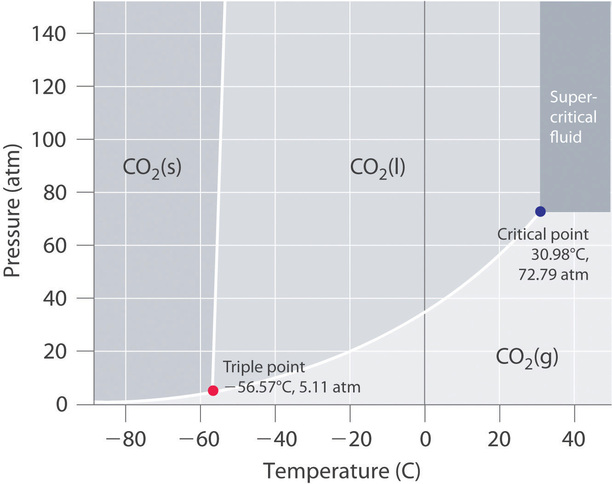
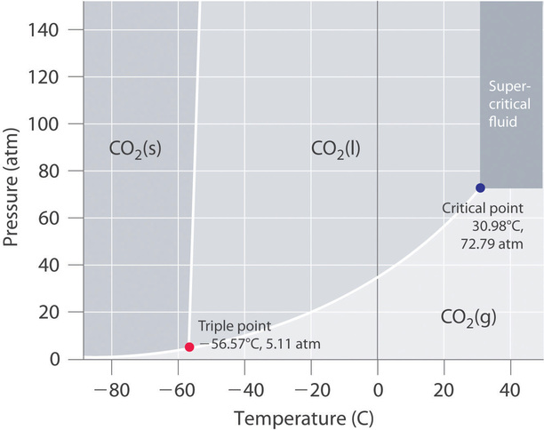
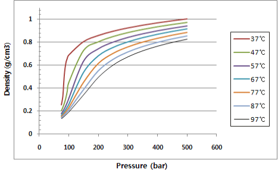
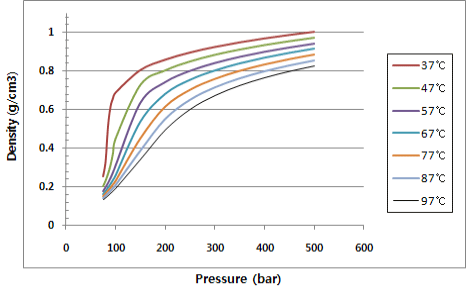
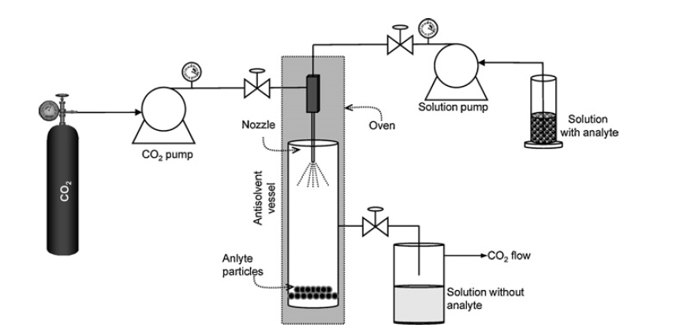
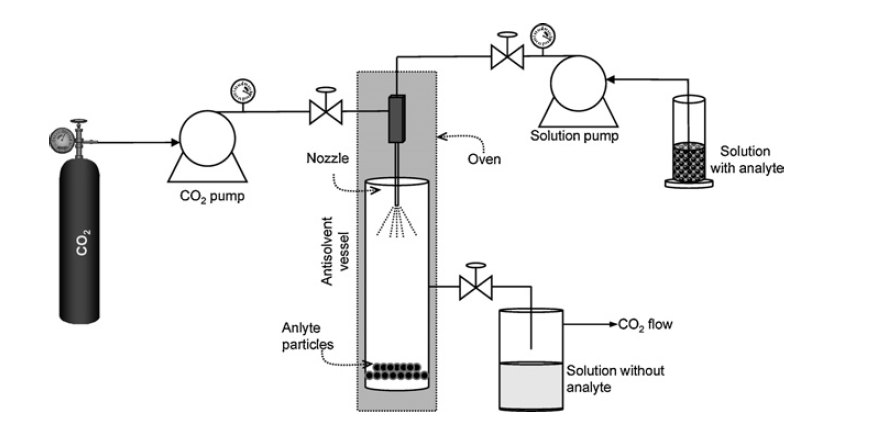

Supercritical Fluid Applications
Ahmed Elshafei Sara Sidky Youssef Tawfik
201800860 201802010 201800418
Keywords: Supercritical Fluids Material Properties Phases Carbon Dioxide Extraction
Introduction
The traditional model of strict, binary phase transitions is challenged by the discovery of supercritical fluids. They present, alternatively, a continuum between the gaseous phase and the liquid phase. A continuum that extends above and around the critical point of a traditional phase diagram. 
Figure 1: Phase Diagram of Carbon Dioxide. Courtesy: Chemistry LibreText.
Materials with temperatures above their critical temperature and pressures above their critical pressure exhibit properties intermediate to those of both liquids and gases. As they are beyond the critical point, they are thus called Supercritical fluids. A phase diagram shows the state of matter as a function of both temperature and pressure which shows a distinct boundary between each two phases of matter. Cagniard de la Tour showed that with increasing the temperature and pressure of the substance, it reaches a particular point where the curve between liquid and gas ends and the substance exists neither gas nor liquid and is merely a homogeneous fluid. At this point the density of the gas increases due to increasing pressure on the other hand the density of the liquid decreases due to thermal expansion. The critical temperature and pressure is an intrinsic property of each substance. Some of their more eccentric characteristics include having no surface tension and being able to dissolve substances outside the range expected of their non-supercritical forms.
The traditional model of strict, binary phase transitions is challenged by the discovery of supercritical fluids. They present, alternatively, a continuum between the gaseous phase and the liquid phase. A continuum that extends above and around the critical point of a traditional phase diagram. 
Figure 1: Phase Diagram of Carbon Dioxide. Courtesy: Chemistry LibreText.
Materials with temperatures above their critical temperature and pressures above their critical pressure exhibit properties intermediate to those of both liquids and gases. As they are beyond the critical point, they are thus called Supercritical fluids. A phase diagram shows the state of matter as a function of both temperature and pressure which shows a distinct boundary between each two phases of matter. Cagniard de la Tour showed that with increasing the temperature and pressure of the substance, it reaches a particular point where the curve between liquid and gas ends and the substance exists neither gas nor liquid and is merely a homogeneous fluid. At this point the density of the gas increases due to increasing pressure on the other hand the density of the liquid decreases due to thermal expansion. The critical temperature and pressure is an intrinsic property of each substance. Some of their more eccentric characteristics include having no surface tension and being able to dissolve substances outside the range expected of their non-supercritical forms.
Properties of Supercritical Fluids
Looking at the properties that make evident why supercritical CO2 would have such significant industrial and practical applications, by far most worthy of initial mention is its almost non-existent surface tension. Seeing as a liquid has stronger intermolecular forces, this gives rise to significant surface tension forces. On the other hand, a gas has much weaker intermolecular forces, insufficient to give rise to any surface tension effects. So, supercritical fluids strike a desirable balance between the diffusibility of a gas and the density and dissolving ability of a liquid. We also note that a material in the supercritical phase is not bound to a single configuration of temperature and pressure, in fact, within the supercritical region (above the critical temperature and pressure) small changes to this configuration results in considerable changes to density and solvating power. This is why they are commonly referred to as very tunable materials.

Looking at the properties that make evident why supercritical CO2 would have such significant industrial and practical applications, by far most worthy of initial mention is its almost non-existent surface tension. Seeing as a liquid has stronger intermolecular forces, this gives rise to significant surface tension forces. On the other hand, a gas has much weaker intermolecular forces, insufficient to give rise to any surface tension effects. So, supercritical fluids strike a desirable balance between the diffusibility of a gas and the density and dissolving ability of a liquid. We also note that a material in the supercritical phase is not bound to a single configuration of temperature and pressure, in fact, within the supercritical region (above the critical temperature and pressure) small changes to this configuration results in considerable changes to density and solvating power. This is why they are commonly referred to as very tunable materials.

Figure 2: Density Argumentation. Courtesy: Suflux.com. Figure 3:As CO2 is a readily available, naturally occurring constituent of our atmosphere, it does not pose a major hazard to human health in moderate concentrations. The CO2 reserve used for supercritical fluid operations is either obtained from atmospheric CO2 (meaning an actual decrease in the amount of CO2 in the environment; or in the worst conditions, a net contribution of 0) or it is obtained from recycling efforts of the CO2 produced from industrial burning of fossil fuels; CO2 that would otherwise be released as a pollutant. Compared to the conditions needed to prepare supercritical fluids from various compounds, supercritical CO2 is notable for its milder than average conditions. Examining the phase diagram of carbon dioxide, we find that it reaches its critical temperature at 31.04 °C and its critical pressure at 72.8 atm. If we compare this to supercritical gold, we find the latter reaches its critical temperature at 6,977 °C and its critical pressure at 5,000 atm. Another important consideration for medical and industrial applications is the ability of supercritical CO2 to leave the material it has been applied to; returning to the gas phase once the pressure is relieved. Under those regular pressure and temperature conditions it would cease to a supercritical fluid, completely detach from the processed material, and leave no residue. This is in contrast to common organic solvents; which even when evaporated off, leave toxic or harmful residues. Or even just residues that change the objects purity, taste, or appearance.
Applications
Supercritical carbon dioxide is mostly used in the extraction of thermally unstable bioactive molecules from plants because the relatively low critical temperature of scCO2; which avoids, otherwise inevitable, degradation of those chemical compounds. The extraction of compounds like carotenoids and antioxidants. Additionally, supercritical fluid extraction (SFE) has been used to selectively remove unwanted compounds from other matrices; as in the extraction of caffeine from green tea using supercritical CO2 with water as cosolvent without the extraction of antioxidants from the matrix.

In the case of polar compounds which are not soluble in supercritical fluids (particularly CO2), SCFs could be used as antisolvents; in this process, a solution consisting of an organic solvent, completely miscible with the SCF, and a solid material dissolved in this solvent, is sprayed into a high-pressure vessel filled with SCF. In these processes the supercritical fluid is used to extract the solvent instead of the analyte.
Supercritical carbon dioxide is mostly used in the extraction of thermally unstable bioactive molecules from plants because the relatively low critical temperature of scCO2; which avoids, otherwise inevitable, degradation of those chemical compounds. The extraction of compounds like carotenoids and antioxidants. Additionally, supercritical fluid extraction (SFE) has been used to selectively remove unwanted compounds from other matrices; as in the extraction of caffeine from green tea using supercritical CO2 with water as cosolvent without the extraction of antioxidants from the matrix.

In the case of polar compounds which are not soluble in supercritical fluids (particularly CO2), SCFs could be used as antisolvents; in this process, a solution consisting of an organic solvent, completely miscible with the SCF, and a solid material dissolved in this solvent, is sprayed into a high-pressure vessel filled with SCF. In these processes the supercritical fluid is used to extract the solvent instead of the analyte.
References
Herrero, M., Mendiola, J., Cifuentes, A. and Ibáñez, E. (2010). Supercritical fluid extraction: Recent advances and applications. Journal of Chromatography A, 1217(16), pp.2495-2511.
Khaw, K., Parat, M., Shaw, P. and Falconer, J. (2017). Solvent Supercritical Fluid Technologies to Extract Bioactive Compounds from Natural Sources: A Review. Molecules, 22(7), p.1186.
Williams, J. and Clifford, A. (2000). Supercritical Fluid, Volume 13. Totowa: Humana Press.
Herrero, M., Mendiola, J., Cifuentes, A. and Ibáñez, E. (2010). Supercritical fluid extraction: Recent advances and applications. Journal of Chromatography A, 1217(16), pp.2495-2511.
Khaw, K., Parat, M., Shaw, P. and Falconer, J. (2017). Solvent Supercritical Fluid Technologies to Extract Bioactive Compounds from Natural Sources: A Review. Molecules, 22(7), p.1186.
Williams, J. and Clifford, A. (2000). Supercritical Fluid, Volume 13. Totowa: Humana Press.